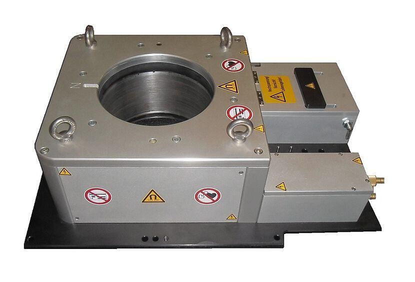
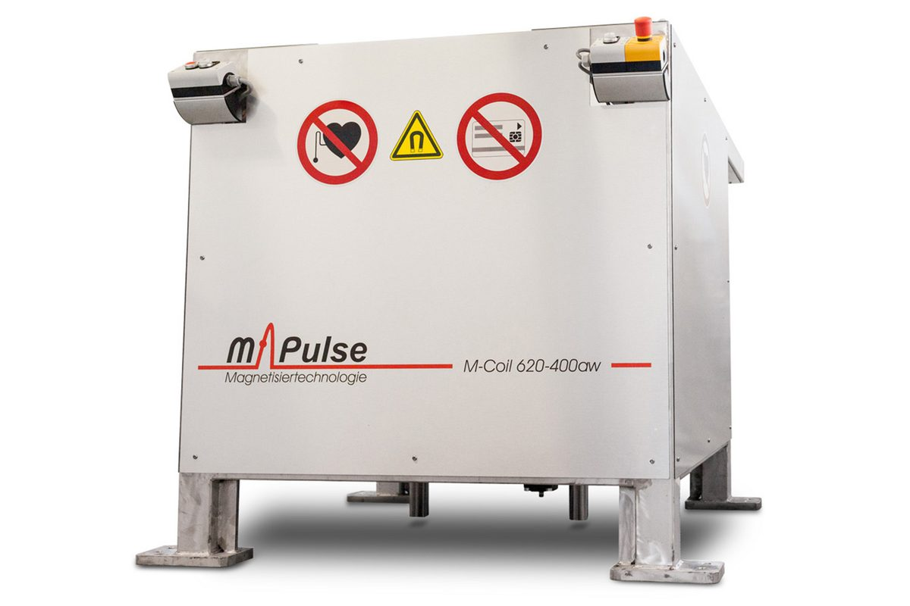
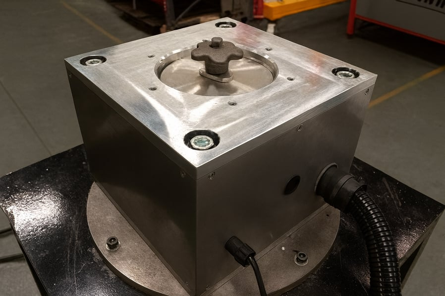
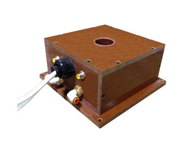
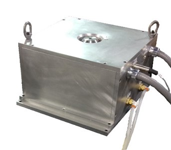
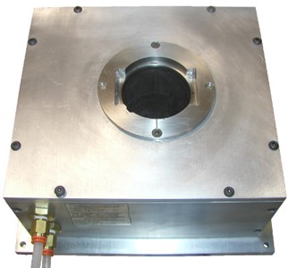
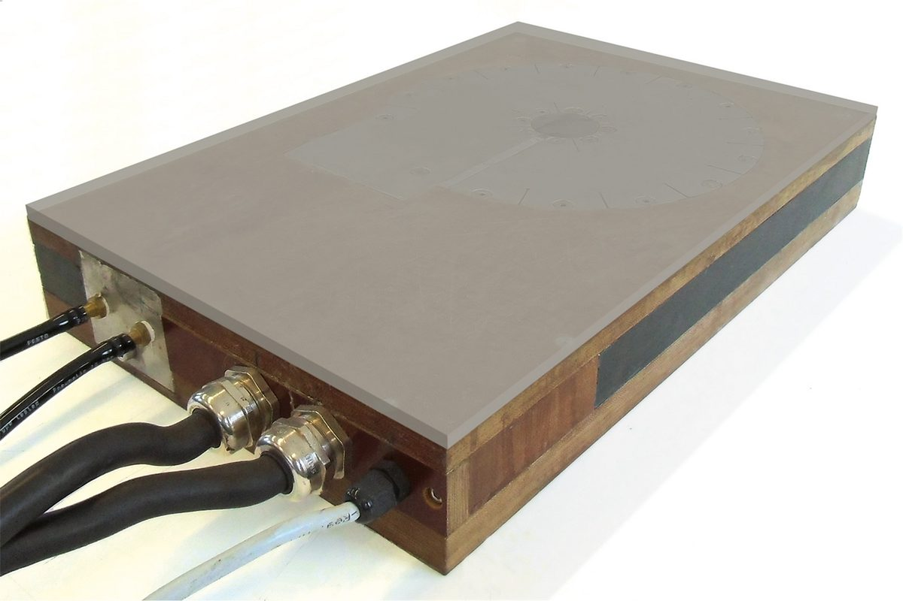
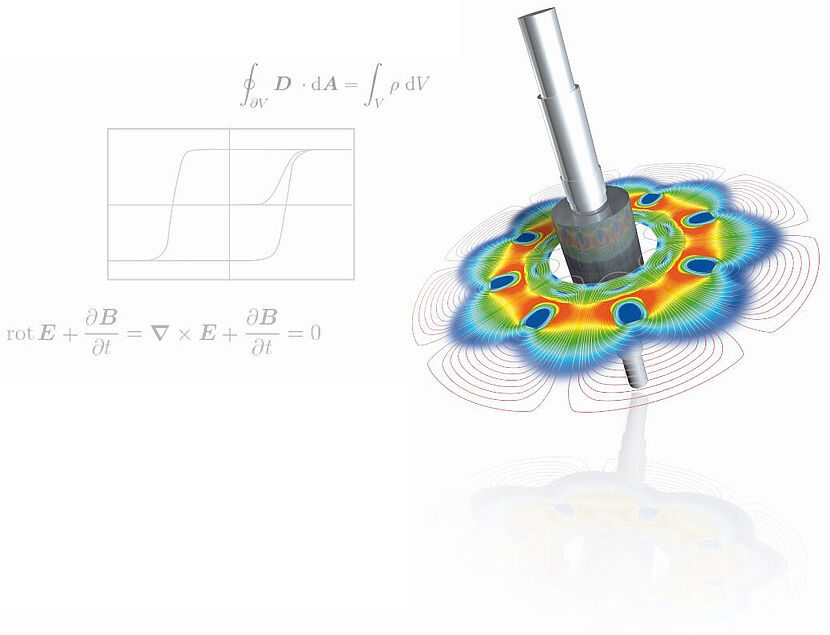
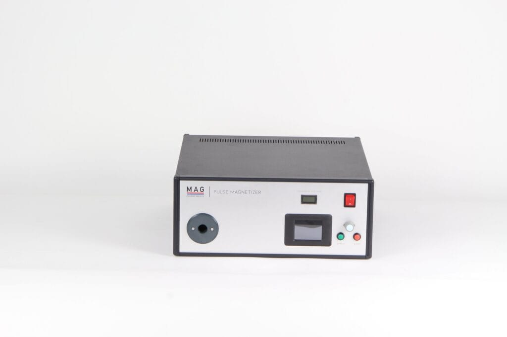

1. Фотографии









2. Что у всех общее
| Приём | Как он выглядит на фотографиях | Нужен ли вам |
|---|---|---|
| Обмотка залита в жёсткий стакан и находится внутри окна ярма | Тёмное кольцо обмотки за окном; ни одного голого провода; стаканы из GPO/эпоксидного монолита | Да. Это главное отличие «работает / не работает» |
| Механику держит сталь, а не изоляция | Фрезерованные блоки, сварные коробки, болты по периметру, стянутый пакет ярма | Да: ярмо стянуть, обмотку залить, выводы разгрузить |
| Зазор минимальный и калиброванный | Втулки/полюсные стаканы, деталь центрируют по OD или сажают на полюс | Да: окно = OD кольца + 1–2 мм, деталь держать |
| Стальной кожух вокруг всего узла | Шкаф M-Coil, коробки, плиты с Т-пазами | Да, хотя бы клетка: детали при выстреле летают |
| Короткие токоведы, разъёмы/обжим вместо скруток | Тяжёлые разъёмы на плите, отдельный шкаф банки вплотную | Да: 4 кА на скрутке живёт один выстрел |
| Водяное охлаждение обмотки | Латунные штуцеры, три шланга, быстросъёмы | Нет при вашем цикле: 1 выстрел / 1–2 мин, нагрев обмотки ~2 K на выстрел. Достаточно тепловой массы и обдува |
| Подъёмные петли, масса десятки килограмм | Петли, опоры, ножки | Не нужно: ваша оснастка — настольная |
| Маркировка опасности и блокировки | Знаки «поле», «кардиостимулятор», «карты», кнопочные посты | Минимум: табличка + блокировка крышки + разрядный резистор |
| Оснастка как сменный модуль | Разъём катушки на панели прибора; болтовые фланцы | Да: клеммы на корпусе, диод — на клеммах оснастки |
| Многополюсные сегментные системы | 12 сегментов на плите, расчётное поле на 6 полюсов | Не ваш случай: кольцо динамика намагничивается осевым полем, один полюс на торец |
3. Ваша оснастка в этих терминах
Сборка из раздела 6 основного документа (24 витка, окно 150 мм, ярмо из мягкой стали) повторяет конструкцию с фотографий «Active OD» и Magnetic Instrumentation в уменьшенном масштабе: обмотка в стакане внутри окна, поток возвращается через ярмо, деталь — в окне. Отличия сознательные:
- нет водяного охлаждения — при 1–2 выстрелах в минуту тепло снимается массой ярма и паузой между выстрелами;
- нет шкафа метровой размерной группы — вместо него клетка/кожух из стали 3–5 мм достаточного объёма;
- диод свободного хода живёт на клеммах оснастки, а не в шкафу — так обмотка не видит обратного напряжения, и полярность переключается перестыковкой двух проводов, а не переключением внутри прибора;
- токоведы — пучок гибких проводов одинаковой длины (или шина с обжимом), разнесённые от обмотки на 50–100 мм, чтобы сила не гнула их внутри витков.
Единственное, чего у вас нет и что стоит держать в голове: у промышленных изделий обмотка и ярмо — один сборочный узел на болтах/заливке. Если у вас обмотка «просто лежит» в окне, на третьем-пятом выстреле она начнёт ползти и протирать изоляцию о сталь.
4. Источники фотографий
- M-Pulse Magnetisiertechnologie — Magnetisiertechnik / Magnetspulen (фото 1, 2, 7, 8)
- Magnet Applications — Magnetizing Fixture (фото 3)
- Magnetic Instrumentation — Magnetizing Fixtures (фото 4, 5, 6)
- MAG — Instruments — Pulse Magnetizer (фото 9)
Снимки сохранены локально в img/fixtures/ — страница открывается без интернета. Подписи описывают видимый конструктив; внутренний узел (число витков, сечение, схема) производители не раскрывают.
Собрано 1 ноября 2026 для проекта импульсного магнетизера (10×2750 + 2×4200 мкФ, 35.9 мФ).